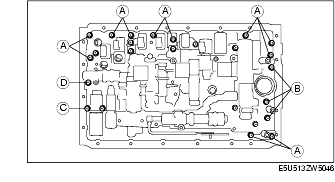
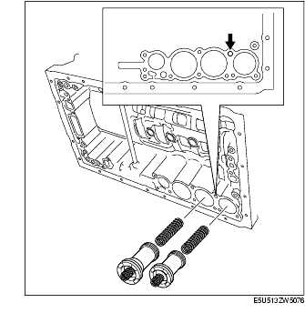

Workshop Manual ➭ TRANSMISSION/TRANSAXLE ➭ AUTOMATIC TRANSMISSION[SJ6A-EL] ➭ CONTROL VALVE BODY REMOVAL [SJ6A-EL]
CONTROL VALVE BODY REMOVAL [SJ6A-EL]
id051311710600
{: #wp1059780}
On-Vehicle Removal
Warning
• A hot transmission and ATF can cause severe burns. Turn off the engine and wait until they are cool before replacing ATF. {: #wp1062752}• Using compressed air can cause dirt and other particles to fly out, causing injury to the eyes. Wear protective eye wear whenever using compressed air.
Caution
• Clean the transmission exterior thoroughly with a stream cleaner or cleaning solvents before removal. {: #wp1062753}• If any old sealant gets into the transmission during installation of the oil pan, trouble may occur in the transmission case and oil pan. Clean with cleaning fluids.
-
Remove the battery cover.
-
Disconnect the negative battery cable. (See BATTERY REMOVAL/INSTALLATION [L8, LF].)
-
Drain the ATF. (See AUTOMATIC TRANSMISSION FLUID (ATF) REPLACEMENT [SJ6A-EL].)
Caution
• Do not damage the fitting surface of the transmission case and the oil pan. {: #wp1062754}• Do not to deform the oil pan.
-
Remove the oil pan and the oil pan gasket.
-
Remove the magnets from the oil pan.{: #wp1059931}
*Note*{: #wp1059958}
• Examine the chips and particles in the oil pan to determine what type of wear has occurred in the transmission. Steel (magnetic)= bearing, gear and plate wear. Brass (non-magnetic)= busing wear.
- Remove the oil strainer from the control valve body component.{: #wp1059981}
-
Remove the O-ring from the oil strainer.
-
Disconnect the solenoid connectors from the solenoids.{: #wp1060019}
-
Disconnect the coupler component from the clamps.
-
Remove the lock plate from the control valve body component.{: #wp1060056}
- Pull the TFT sensor from the control valve body component.
*Note*{: #wp1060093}
• Be sure that the coupler component does not interface with the control valve body component when installing.
- Fix the coupler component with tape to the transmission case as shown in the figure.{: #wp1060111}
- Remove the detent spring cover and detent spring from the control valve body component.{: #wp1060138}
- Remove the bolts from the transmission case as shown in the figure.{: #wp1060165}

Caution
• Do not to drop the control valve body component.
- Disconnect the manual valve link and remove the control valve body component.{: #wp1060210}
- Remove the check valve sub-component and the compression spring from the transmission case.{: #wp1060237}
- Remove the transmission case gaskets and the brake drum gaskets from the transmission case.{: #wp1060265}
Caution
• Take care as the C-2 and B-3 accumulator piston may eject.
- Apply compressed air into the oil passage as shown in the figure and remove the accumulator pistons (C-2, B-3) and the compression springs from the transmission case.{: #wp1060312}

Caution
• Do not to damage the accumulator pistons.
-
Remove the snap rings from the accumulator pistons (C-2, B-3) using a flathead screwdriver.
-
Remove the compression springs from the accumulator pistons (C-2, B-3).
-
Remove the O-rings from the accumulator pistons (C-2, B-3) using a flathead screwdriver.
Caution
• Take care as the C-3 accumulator piston may eject.
- Apply compressed air into the oil passage as shown in the figure and remove the accumulator piston (C-3) and compression springs from the transmission case.{: #wp1060415}
-
Remove the O-rings from the accumulator piston (C-3) using a flathead screwdriver.
-
Remove the accumulator valve and compression springs from the transmission case.{: #wp1060455}